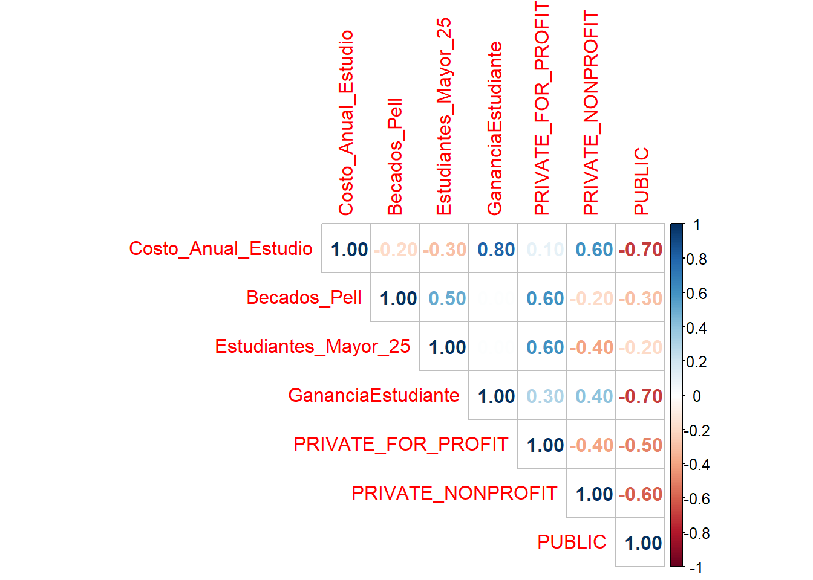
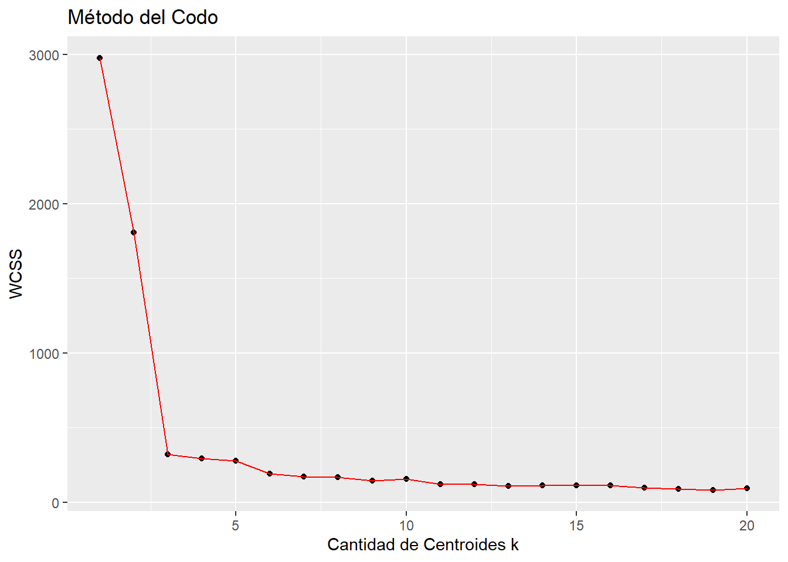

Análisis de las instituciones educativas de los Estados Unidos
1- Contexto del problema
El Departamento de Educación de los Estados Unidos pone a disposición del público información para tomar mejores decisiones en la elección de instituciones de educación. Esta información se encuentra almacenada en el dataset “CollegeScorecard.csv”, publicado en el año 2016, las observaciones corresponden a la información de las diferentes instituciones educativas de dicho país y el dataset se compone de 7804 observaciones y 1725 variables como se observa en la Tabla 1.
El objetivo de este proyecto es identificar dentro del dataset si existen grupos de observaciones que contengan similitud con base a las categorías con las que se van a trabajar.
| Filas | Columnas |
|---|---|
| 7804 | 1725 |
2- Procesamiento de los datos
Para la depuración inicial de la base de datos se tomaron en cuenta las instituciones que están operando actualmente y que sean solamente presenciales. Luego seleccionamos las variables que queremos tomar en cuenta en nuestro estudio:
- Nombre de institución.
- Tipo_de_Entidad: Tipo de institución (Public, private nonprofit, private for-profit).
- Costo_Anual_Estudio: costo anual de estudio.
- Becados_Pell: porcentaje de estudiantes con beca “PELL”.
- Estudiantes_Mayor_25: porcentaje de estudiantes mayores a 25 años.
- GananciaEstudiante: Ganancia de la universidad por estudiante.
Luego, se procedió a revisar los valores nulos de las variables seleccionadas y se eliminaron.
Al realizar todo lo anterior, se obtiene la nueva dimención de los datos que se observa en la Tabla 2.
| Filas | Columnas |
|---|---|
| 3747 | 6 |
3- Normalización de las variables
Se normaliza la base de datos convirtiendo las variables categóricas en “dummies”, se normalizan las variables de tipo numérica para transformarlas a escala de [0,1], y se elimina la variable “Institucion” para poder crear el modelo de agrupamiento.
De esta forma se obtiene el dataset que se muestra en la Tabla 3.
| Costo_Anual_Estudio | Becados_Pell | Estudiantes_Mayor_25 | GananciaEstudiante | PRIVATE_FOR_PROFIT | PRIVATE_NONPROFIT | PUBLIC |
|---|---|---|---|---|---|---|
| 0.2094971 | 0.7115 | 0.1044522 | 0.1470488 | 0 | 0 | 1 |
| 0.2251692 | 0.3505 | 0.2418209 | 0.1465619 | 0 | 0 | 1 |
| 0.1158058 | 0.6839 | 0.8539270 | 0.1956377 | 0 | 1 | 0 |
| 0.2296632 | 0.3281 | 0.2636318 | 0.1350233 | 0 | 0 | 1 |
| 0.1883355 | 0.8265 | 0.1265633 | 0.1267628 | 0 | 0 | 1 |
| 0.3208374 | 0.2107 | 0.0848424 | 0.1979260 | 0 | 0 | 1 |
4- Correlación entre las variables
Se analiza el grado de correlación existente entre las variables con las que se esta trabajando, esto se puede ver en la Figura 1.

Se puede observar que la correlación mas significativa es entre las variables “Costo_Anual_Estudio” y “GananciaEstudiante” que tiene un valor de 0.80.
5- Modelo de agrupamiento
Para el proyecto, se utilizará el metodo K-Means. Para esto primero se utilizará el Método del Codo (Elbow Method) para poder identificar el número óptimo de clusters.

En la Gráfica 1, se puede observar que el número óptimo de clusters es 3, dicho valor sera empleado para el parámetro del modelo de agrupamiento. En la Tabla 4, podemos observar un resumen donde se observa el valor de la medía para cada variable numérica de acuerdo a cada grupo obtenido. Por otro lado, en la Tabla 5 podemos observar la cantidad por cada tipo de institución que hay en cada grupo.
| Clasificacion | Costo_Anual_Estudio | Becados_Pell | Estudiantes_Mayor_25 | GananciaEstudiante |
|---|---|---|---|---|
| 1 | 25650.91 | 0.6899499 | 0.6183637 | 14236.274 |
| 2 | 24831.93 | 0.5978909 | 0.4434109 | 10236.176 |
| 3 | 42527.38 | 0.3111475 | 0.1086204 | 17077.959 |
| 4 | 14666.97 | 0.4172856 | 0.3105359 | 3938.273 |
| Clasificacion | Tipo_de_Entidad | Cantidad |
|---|---|---|
| 1 | PRIVATE_FOR_PROFIT | 904 |
| 2 | PRIVATE_NONPROFIT | 495 |
| 3 | PRIVATE_NONPROFIT | 764 |
| 4 | PUBLIC | 1584 |